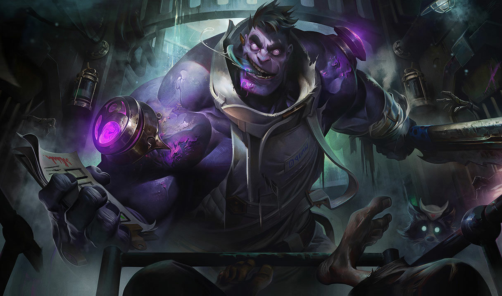

Assasinos Lutadores Magos Atiradores Suportes Tanques

Completamente maluco, tragicamente perigoso e terrivelmente roxo, Dr. Mundo é o que mantém muitos zaunitas dentro de casa nas noites mais escuras. Hoje se diz médico, mas ele já foi um paciente do manicômio mais infame de Zaun. Após ''curar'' toda a equipe do local, Dr. Mundo começou a atuar em sua nova profissão nos corredores vazios do lugar em que um dia fora tratado, repetindo os procedimentos extremamente antiéticos pelos quais ele mesmo havia passado. Munido de um armário cheio de remédios e nenhum conhecimento médico, ele fica mais monstruoso a cada nova injeção e continua instilando medo nos infelizes ''pacientes'' que passam perto de sua ''clínica''.